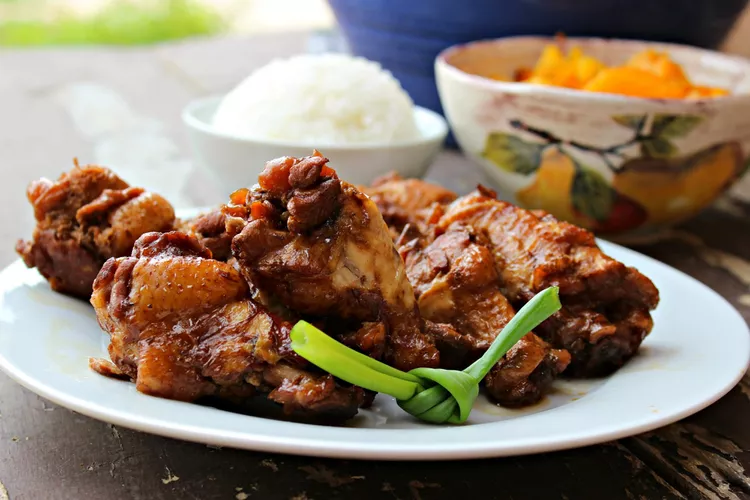

Lolah's Chicken Adobo
Home

Description
Lolah's Chicken Adobo is a delicious and flavorful dish that combines
the tangy taste of adobo with the succulence of chicken.
Ingredients
- 3 tablespoons vegetable oil
- 3 pounds boneless, skinless chicken thighs, rinsed and patted dry
- 6 cloves garlic, peeled and thinly sliced
- 1/2 cup soy sauce
- 1/2 cup apple cider vinegar
- 1/2 cup water
- 2 tablespoons pickling spice, wrapped in cheesecloth
Instructions
- Heat oil in a large pot over medium heat until oil is
shimmering. Cook garlic in oil for no more than 30 seconds. Add
all of the chicken to the pot; cook, stirring frequently, until
chicken is white all over. Do not brown.
- Pour in soy sauce, vinegar, and water, and add the pickling
spice. Make sure the spice ball is submerged. Bring to a boil,
reduce heat to simmer, and place lid on pot so that some steam
can escape. Simmer for 1 hour, or until chicken is very tender.